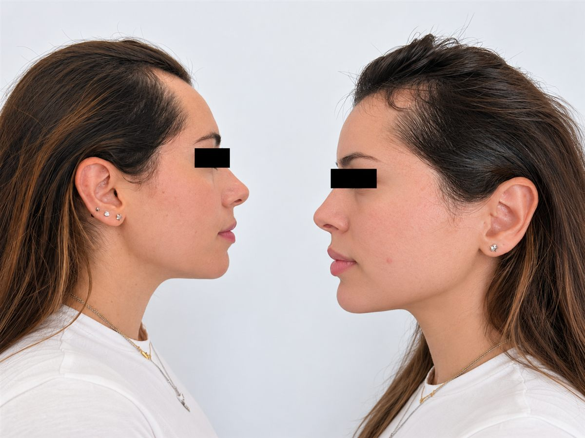

Estudio en Granollers · provincia de Barcelona
Micropigmentación capilar para Barcelona
Si te preocupa una raya cada vez más visible, las entradas o una zona con menos densidad, puedes enviarnos fotos desde Barcelona y recibir una primera orientación antes de desplazarte. Valoramos el efecto densidad también con pelo medio o largo. Todas las citas se hacen en Nohuska Beauty Lab, Granollers.
Enviar fotos y valorar mi caso
Respuesta rápida
Nohuska Beauty Lab valora casos de micropigmentación capilar femenina y masculina (también llamada tricopigmentación o SMP) para raya, entradas, zonas con poca densidad o línea capilar. Crea un efecto visual de densidad con puntos de pigmento: no genera pelo ni trata la causa de la caída. El estudio está en Avinguda Sant Esteve, 40, Granollers, y la primera orientación puede hacerse por WhatsApp con fotografías.
Con pelo largo: efecto densidad, no acabado rapado.
Muchas consultas que recibimos desde Barcelona son de mujeres que no quieren cortarse el pelo. En ese caso el objetivo es distinto al acabado rapado: se trabaja entre el cabello que conservas para reducir visualmente el contraste del cuero cabelludo, por ejemplo en una raya más ancha o en zonas localizadas.
No equivale a dibujar una melena ni a crear volumen físico. La longitud del cabello y el efecto que quieres conservar cambian el planteamiento, y no elegimos el diseño solo por ser mujer u hombre.
Amplía la información en la guía de densidad capilar femenina.
Qué fotos enviar
Imágenes actuales con luz natural de la raya, las entradas o la zona de menor densidad, sin filtros. Si te tiñes, indica tu color habitual de raíz.
Enviar mis fotosMicropigmentación capilar, caída y peluca: no son lo mismo.
Una peluca o prótesis cubre la zona; la micropigmentación capilar crea un efecto visual de densidad. No frena la caída, no genera pelo y no sustituye la valoración de un dermatólogo.
Si hay caída repentina, irritación, placas o dudas sobre la causa, prioriza una consulta sanitaria antes de reservar un procedimiento estético. Si el caso la necesita, te lo indicaremos antes de plantear nada.
Cómo planificamos el tratamiento
Quién valora tu caso
Valentina, especialista con más de cinco años de experiencia y formación en micropigmentación, realiza la valoración capilar y plantea una propuesta adaptada a la superficie, el patrón existente, el tono y el objetivo visual.
No usamos un diseño estándar: primero determinamos si el procedimiento es adecuado, qué resultado puede plantearse y qué límites debes conocer antes de reservar.

Precio y sesiones
Desde 450 €. El presupuesto final depende de la superficie, el objetivo y las sesiones planteadas. La valoración es gratuita y recibes la propuesta antes de decidir. Para entender de qué depende, consulta la guía de precio, duración y sesiones.
Cómo llegar desde Barcelona
Consulta la R2 Nord hasta Granollers Centre y comprueba los avisos oficiales de Rodalies. La R8 no pasa por Barcelona ciudad; si eliges la R3 hacia Granollers-Canovelles, verifica el servicio vigente. En coche, planifica la ruta por la C-17 o la AP-7 según tu punto de salida.
Preguntas sobre micropigmentación capilar para Barcelona
¿Nohuska está en Barcelona ciudad?
No. Todas las citas se realizan en Avinguda Sant Esteve, 40, 08402 Granollers.
¿Puedo hacerla con el pelo largo?
Sí, puede estudiarse un efecto densidad entre el cabello existente. La viabilidad se confirma en la valoración.
¿Hace crecer el pelo?
No. Es un efecto visual de densidad. No frena la caída ni sustituye la valoración de un dermatólogo.
¿Cuánto cuesta?
Desde 450 €, según la superficie, el objetivo y las sesiones. La valoración es gratuita y el presupuesto llega antes de decidir.
¿Puedo enviar fotos antes de desplazarme?
Sí. Con luz natural y sin filtros. Te diremos si conviene una valoración presencial.
¿Quién realiza la valoración?
Valentina, especialista con más de cinco años de experiencia y formación en micropigmentación.
¿Cuánto dura el resultado?
Varía según piel, zona, exposición solar y cuidados. En la valoración explicamos el mantenimiento de tu caso.
¿Qué hago si me tiño el pelo?
Indica tu color de raíz y si tienes una coloración prevista; te explicamos cómo coordinarla con las citas.
¿Cuándo debo consultar antes a un médico?
Si hay caída repentina, irritación, placas o dudas sobre la causa.
¿Cómo llego desde Barcelona?
Desde Barcelona, consulta la R2 Nord hasta Granollers Centre y verifica horarios y alteraciones. La R8 no pasa por Barcelona ciudad; para la R3 comprueba el servicio vigente hacia Granollers-Canovelles. En coche, planifica la ruta por la C-17 o la AP-7. Confirma la cita antes de desplazarte.
Información relacionada
Una consulta por WhatsApp no confirma una reserva. Acordaremos contigo el tratamiento, la fecha y la hora.
Empieza por una valoración capilar.
Primera orientación por fotos y tratamiento presencial en Granollers.
Consultar por WhatsApp